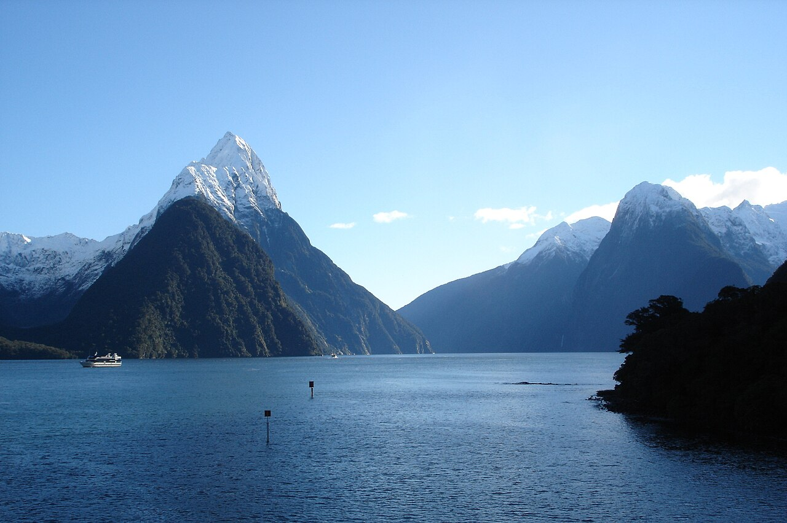

Why this place?
Milford Sound, or Piopiotahi in Māori, is a fiord on the southwest coast of New Zealand's South Island. It sits inside Fiordland National Park, which is part of the Te Wāhipounamu World Heritage Area. I love being outside, so a place where the mountains come straight up out of the ocean is pretty much my dream trip. After looking at pictures of it for a while I kind of get why Kipling said what he said. Here are a few things I learned about it, and hopefully a reason or two for you to go!
A few facts
-
It's a fiord, not a sound
- Glaciers carved it out during the ice ages and then the sea flooded in. A "sound" is a drowned river valley, so the name is technically wrong.
- A sealer named John Grono named it after Milford Haven in Wales in the early 1800s.
- The Māori name Piopiotahi means "a single piopio," a native bird that is now extinct.
-
It rains most of the year
- It gets around 6 to 7 metres of rain a year, which makes it one of the wettest inhabited places on Earth.
- Rain falls on roughly half the days of the year. Locals say a rainy day is the best day to visit, because hundreds of temporary waterfalls show up on the cliffs.
-
The mountains and waterfalls are huge
- Mitre Peak (Rahotu) rises about 1,700 metres, over 5,500 feet, almost straight out of the water. It's named after a bishop's hat.
- Lady Bowen Falls (162 m) and Stirling Falls (155 m) are the two waterfalls that run all year.
- The fiord runs about 15 km inland from the Tasman Sea.
-
The wildlife is the real show
- Bottlenose dolphins, New Zealand fur seals, and Fiordland crested penguins (tawaki) all live in the fiord.
- Kea, the world's only alpine parrot, hang around the Homer Tunnel and are known for pulling the rubber trim off cars.
- A dark layer of fresh water floats on top of the salt water, so black coral that normally lives in the deep ocean grows shallow enough to see from the underwater observatory.
-
Getting there is half the trip
- It's about 120 km from Te Anau on the Milford Road (State Highway 94), through the 1.2 km long Homer Tunnel.
- From Queenstown it's roughly 4 hours of driving each way, which is why a lot of people do it as one very long day.
- The Milford Track, one of New Zealand's Great Walks, is a 4 day, 53.5 km hike that ends right at the fiord.
-
Bring bug spray
- The sandflies are famous. Māori legend says the goddess Hine-nui-te-pō let them loose so people wouldn't stand around forever staring at the place.
See it for yourself
A short 4K film of the fiord from Nature Relaxation Films. Turn the sound on for the waterfalls.
Who travels where? (Tableau)
Milford Sound is one of New Zealand's busiest tourist spots, so here is a Tableau Public dashboard by Nathan Adlam that maps international tourist trips and tourism spending by country. Use the Year filter to see how travel changed over time.

